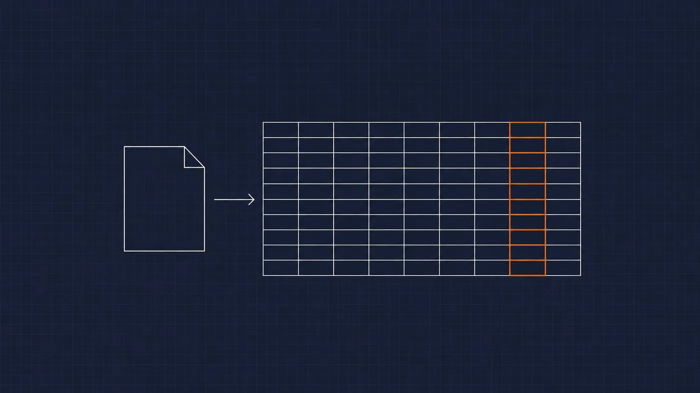

Business ITPublished October 30, 2026 · 3-minute read
Excel Removed the Leading Zeros: Protect IDs Before Importing a CSV
Keep reference codes intact when importing a CSV into Excel. Check text columns, preserve the source export, and validate before sending data onward.
Learn More